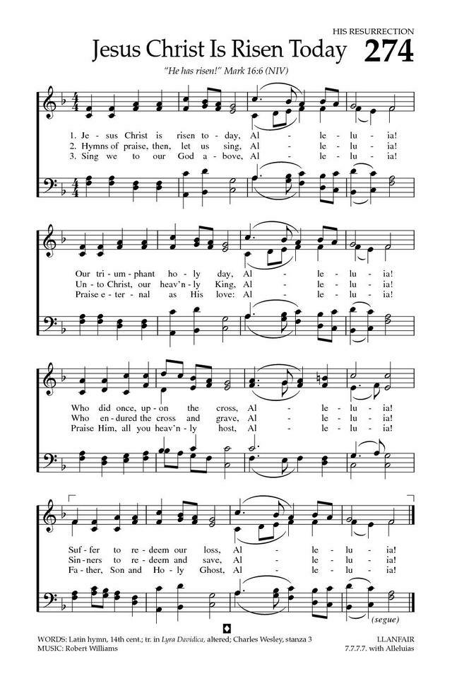
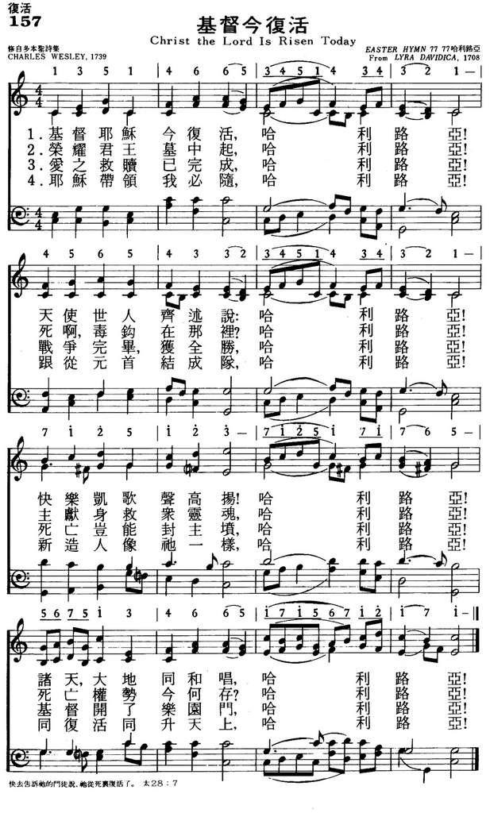
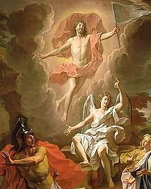

|
|
|
|
1 Jesus Christ is ris'n today, Alleluia! 2 Hymns of praise then let us sing, Alleluia! 3 But the pains which he endured, Alleluia! 4 Sing we to our God above, Alleluia! |
157基督今复活
1.基督耶稣今复活，哈利路亚！
天使世人齐述说：哈利路亚！ 快乐凯歌声高扬！哈利路亚！ 诸天大地同和唱，哈利路亚！ 2.荣耀君王墓中起，哈利路亚！ 死啊毒钩在哪里？ 哈利路亚！ 主献身救众灵魂，哈利路亚！ 死亡权势今何存？ 哈利路亚！ 3.爱之救赎已完成，哈利路亚！ 战争完毕获全胜，哈利路亚！ 死亡岂能封主坟，哈利路亚！ 基督开了乐园门，哈利路亚！ 4.耶稣带领我必随，哈利路亚！ 跟从元首结成队，哈利路亚！ 新造人像他一样，哈利路亚！ 同复活同升天上，哈利路亚！
|
|
https://hymnary.org/hymn/BH2008/274  |
|
|
|
|

| Text: | Jesus Christ Is Risen Today |
| Author (st. 3): | Charles Wesley |
| Tune: | LLANFAIR |
| Composer: | Robert Williams |

Notes
Jesus Christ is risen to-day. Easter. This version of the anonymous Latin hymn, "Surrexit Christus hodie," is first found in a scarce collection entitled:—
Lyra Davidica, or a Collection of Divine Songs and Hymns, partly new composed, partly translated from the High German and Latin Hymns; and set to easy and pleasant tunes. London: J. Walsh, 1708.
Of the history of this collection nothing is known, but the character of its contents may perhaps lead to the supposition that it was compiled by some Anglo-German of the pietist school of thought. The text in Lyra Davidica, 1708, p. 11, is as follows :—
"Jesus Christ is risen to day, Halle-Haile-lujah.
Our triumphant Holyday
Who so lately on the Cross
Suffer'd to redeem our loss.“Hast ye females from your fright
Take to Galilee your flight
To his sad disciples say
Jesus Christ is risen to day.“In our Paschal joy and feast
Let the Lord of life be blest
Let the Holy Trine be prais'd
And thankful hearts to heaven be rais'd."
…The oldest Latin text
known is that given by Mone, No. 143, from a Munich manuscript of the
14th century. This manuscript does not contain stanzas 4, 6, 8, 10, 11
(enclosed in brackets above). Of these stanza 6,11 are found in a
Breslau manuscript, cir 1478; and stanzas 4, 8, 10 in the Speier
Gesang-Buch (Roman Catholic), 1600….
The modern form of the hymn appears first in Arnold's Compleat
Psalmodist, 2nd edition, pt. iv., 1749, where the first stanza of
1708 is alone retained, and stanzas 2 and 3 are replaced by new ones
written without any reference to the original Latin. This recast is as
follows:—
Jesus Christ is ris'n to-day. Hallelujah.
Our triumphal holyday
Who did once upon the Cross
Suffer to redeem our Loss."Hymns of praises let us sing
Unto Christ our heavenly King
Who endur'd the Cross and Grave
Sinners to redeem and save."But the pain that he endured
Our Salvation has procured
How above the Sky he's King
Where the Angels ever sing."
Variations of this form are found in several collections. The following is in Kempthorne's Select Portions of Psalms, &c. 1810:—
Hymn lxxxii.
"Benefits of Christ's Resurrection to sinners.
"Rom. iv. 25.
"For Easter Day."Jesus Christ is ris'n to day;
Now he gains triumphant sway;
Who so lately on the cross
Suffer'd to redeem our loss.
Hallelujah."Hymns of praises let us sing,
Hymns to Christ our heav'nly King,
Who endur'd both cross and grave,
Sinners to redeem and save.
Hallelujah."But the pains, which he endur'd,
Our salvation have procur'd;
Now He reigns above the sky,
Where the angels ever cry
Hallelujah."
The next form is that which was given to it in the Supplement to Tate & Brady. This was added to the Supplement about 1816. This text is:—
”Jesus Christ is risen to-day,
Our triumphant holy day;
Who did once, upon the cross,
Suffer to redeem our loss.
Hallelujah,"Hymns of praise then let us sing
Unto Christ our heavenly King:
Who endur'd the cross and grave,
Sinners to redeem and save.
Hallelujah.“But the pains which He endur'd
Our salvation hath procur'd:
Now above the sky He's King,
Where the angels ever sing.
Hallelujah."
To this has been added by an unknown hand the following doxology:—
"Now be God the Father prais'd,
With the Son from death uprais'd,
And the Spirit, ever blest;
One true God, by all confest.
Hallelujah."
This doxology, from
Schaff’s Christ in Song, 1870, p. 198, is in the Hymnal
Companion and one or two other collections.
Another doxology is sometimes given, as in Lord Selborne's Book
of Praise, 1862, Taring's Collection, 1882,
and others, as follows:—
"Sing we to our God above—Hallelujah!
Praise eternal as His love; Hallelujah!
Praise Him all ye heavenly host, Hallelujah!
Father, Son, and Holy Ghost. Hallelujah! "
This is by C. Wesley.
It appeared in the Wesley Hymns & Sacred Poems,
1740, p. 100; again in Gloria Patri, &c, or Hymns to
the Trinity, 1746, and again in the Poetical Works,
1868-72, vol. iii. p. 345.
The above text from Tate and Brady's Supplement,
cir. 1816, is that adopted by the leading hymn-books in all
English-speaking countries, with in some cases the anonymous doxology,
and in others with that by C. Wesley. It must be noted that this hymn
sometimes begins:—
“Christ the Lord, is risen to day
Our triumphant holy day."
This must be
distinguished from:—
"Christ the Lord, is risen to-day,
Sons of men and angels say," by C. Wesley (p. 226, i.); and,
"Christ the Lord, is
risen to-day,
Christians, haste your vows to pay:"
a translation of "Victimae Paschali” (q. v.), by Miss Leeson; and,
“Christ the Lord, is
risen to-day,
He is risen indeed:"
by Mrs. Van Alstyne (q. v.).
Another arrangement of "Jesus Christ is risen to-day " is given in T.
Darling's Hymns, &c, 1887. This text is stanza i.,
ii., Tate & Brady Supplement, with a return in
stanza i. lines 3, to the older reading; and stanzas iii., iv. by Mr.
Darling.
It may not be out of place to add, with reference to this hymn, that the
tune to which it is set in Arnold, and to which it is still sung, is
that published with it in Lyra Davidica. The tune
is also anonymous, and was probably composed for the hymn. The
ascription of it by some to Henry Carey is destitute of any foundation
whatever, while Dr. Worgan, to whom it has been assigned by others, was
not born until after the publication of Lyra Davidica.
[George Arthur Crawford, M.A.]
--John Julian, Dictionary of Hymnology (1907)
Tune Information
| Title: | LLANFAIR |
| Composer: | Robert Williams (1817) |
| Meter: | 7.7.7.7 with alleluias |
| Incipit: | 11335 43254 34321 |
| Key: | F Major |
| Copyright: |
| Short Name: | Robert Williams |
| Full Name: | Williams, Robert, 1782-1821 |
| Birth Year: | 1782 |
| Death Year: | 1821 |
Robert Williams (b. Mynydd Ithel, Anglesey, Wales, 1781; d. Mynydd Ithel, 1821) lived on the island of Anglesey. A basket weaver with great innate musical ability, Williams, who was blind, could write out a tune after hearing it just once. He sang hymns at public occasions and was a composer of hymn tunes.
Bert Polman
Notes
LLANFAIR is usually attributed to Welsh singer Robert Williams (b. Mynydd Ithel, Anglesey, Wales, 1781; d. Mynydd Ithel, 1821), whose manuscript, dated July 14, 1817, included the tune. Williams lived on the island of Anglesey. A basket weaver with great innate musical ability, Williams, who was blind, could write out a tune after hearing it just once. He sang hymns at public occasions and was a composer of hymn tunes.
LLANFAIR was first published with a harmonization by John Roberts in John Parry's Peroriaeth Hyfryd (Sweet Music) (1837). The tune has been associated with the Wesley/Cotterill text since its publication with the text in The English Hymnal (1906). LLANFAIR is actually a common Welsh name, but some scholars believe that in this case the tune's name refers to the Montgomery County [sic Anglesey County] village in Wales where Williams was born.
A rounded bar form (AABA) tune, LLANFAIR features the common Welsh device of building a melody on the tones of the tonic triad. The tune is in a major key (not all Welsh tunes are in minor keys!). The melismas give fitting shape to the "alleluias." Use brisk accompaniment for this cheerful tune. LLANFAIR has a similar pattern to that of EASTER HYMN (388); see suggestions there for antiphonal style performance.
--Psalter Hymnal Handbook, 1988
诗歌背景资料：《基督今复活》
《基督今复活》是基督教复活节常传唱的歌曲。作者查理．卫斯理（Charles Wesley,
1707-1788）一生写了六千五百首圣诗，其中这首《基督今复活》原有十一节，今日通用的四节歌词乃剪接而成，包括原诗的第一、四节，第二（前两句）与第三（后两句）节，第五节。据圣诗学者劳特理（Erik
Routley）的说法，“哈利路亚”的部分是由卫斯理兄弟的一名跟随者，即英国国教牧师马丹（Martin
Madan）所添加的。马丹牧师添加“哈利路亚”，立刻收画龙点睛之妙，不仅符合新约时代复活节唱“哈利路亚”副歌的历史传统，也善用了圣经的启应精神。
以启应的方式敬拜源自圣经时代，诗篇里运用广泛的对仗（parallelism）手法，足以证明很多诗篇是为了“两方”所写的。“启应”通常指一对多，例如由祭司以说或唱带领，会众齐声回应；如果两个诗班（或人数相当的两组人）则另称为“对唱”，好比尼赫迈亚在耶路撒冷城墙告成时所用的两队诗班（尼十二31-43）。与这首圣诗格式最相近的是诗篇136篇，每节后半都有“因他的慈爱永远长存”。
启应／对唱的观念源于犹太人，主后四世纪才由米兰的安波罗修主教传入西方，后来在威尼斯的圣马可教堂发扬光大。这个教堂建筑的地形呈十字，十六世纪时，许多音乐家为两个诗班（或多达五个诗班）与两架管风琴写作，音乐出色，影响深远，我们在巴赫的《马太受难曲》中还能见到两个诗班的作法。

https://www.mred365.cn/szxg/7160.html
Words: a 14th Century Bohemian Latin carol (Surrexit
Christus Hodie)
Music: Llanfair, by Robert Williams (b. Oct. 27, 1782; d.
July 5, 1818)
Links:
Wordwise Hymns (Robert
Williams)
The Cyber
Hymnal
Hymnary.org
Note: This was originally a Latin hymn from the fourteenth century called Surrexit Christus Hodie (meaning literally “Risen Christ Today”). It was first translated into English in 1708, and with a number of changes and additions it became the fine resurrection hymn, Jesus Christ Is Risen Today, Alleluia (not to be confused with Charles Wesley’s great hymn, Christ the Lord Is Risen Today). In 1749, John Arnold in the Compleat Psalmist took the first stanza of the original, and added two more that weren’t tied to the Latin version at all. The doxology which ends the version in the Cyber Hymnal was added by Charles Wesley.
“Alleluia,” repeated sixteen times in the hymn, is the Greek form of Hallelujah, an exclamation and shout of joy, in Hebrew it’s Halal (praise) Jah (a shortened form of Jehovah or Yahweh). It translates the frequent Old Testament phrase, “Praise the Lord!” (e.g. Ps. 106:1).
Asmall house fire can usually be managed and put out with a fire extinguisher. But a spreading fire in a building, one that’s beyond easy control, can quickly imperil lives. It poses multiple hazards, not only from the flames, but from the suffocating smoke, and sometimes from explosions, poisonous chemicals in the air, or falling debris. When such a fire is detected, it’s time to get out!
Hospitals, schools, offices, and other public buildings that have many rooms and corridors, usually have an escape route mapped out and posted on the wall in various places. Sometimes there are also fire escapes, steel steps down the outside of the building. Many facilities have regular fire drills so the exit procedure can be practiced.
One of the most tragic fires in American history occurred in 1911, at the Triangle Shirtwaist Factory, in New York City. (A shirtwaist is a woman’s tailored dress shirt or blouse.) One hundred and forty-six people died. Mostly women, Jewish immigrants as young as fourteen, working long hours for a pittance. Some were killed by the fire, others by smoke inhalation, and still others by attempting to jump from windows to the ground, eight to ten floors below.
The deadliest industrial fire in the city’s history, the restored building, now a part of New York University, has been designated as a National Historic Landmark. The reason for the structure’s notoriety goes beyond the tragedy of the many deaths. It concerns the reason why it happened. Employers had locked the workers in!
Workers’ rights never seem to have been considered. Owners wanted to prevent employees from taking unauthorized breaks, or slipping out with shirts or material they’d stolen. The folly and thoughtless cruelty of this, and the tragedy that followed led to the enacting of new laws and safety standards that continue to benefit workers today, far and wide, with better worker conditions, and proper exit provisions in time of emergencies.
But there’s another kind of exit we need to look at, an even more famous one: the resurrection of the Lord Jesus Christ from the grave. Mentioned prophetically a few times in the Old Testament (e.g. Isa. 53:10; Ps. 16:10, cf. Acts 2:22-28), it becomes a major theme of the New Testament. Our eternal salvation depends upon it. The Bible is emphatic about that. “If Christ is not risen, your faith is futile; you are still in your sins!” (I Cor. 15:17).
“Christ died for our sins” (I Cor. 15:3). He thus paid the debt we owe God, so that we, through faith in His sacrifice, might receive the gift of eternal life (Jn. 3:16). But if He’d stayed dead and buried it would mean He was an ordinary mortal, and no divine Saviour at all. His “exit” from the grave was necessary. And He was “declared [and proved] to be the Son of God with power…by the resurrection from the dead” (Rom. 1:4).
As Man, He died. But as God the Son He had power over death. He said, “I have power to lay it [My life] down, and I have power to take it again” (Jn. 10:18). After His ascension back into heaven, Christ presented Himself to John, early in the book of Revelation, in His glorified state, saying, “I am He who lives, and was dead, and behold, I am alive forevermore. Amen. And I have the keys of Hades [the realm of the dead] and of Death” (Rev. 1:18).
The present hymn provides another way to rejoice in our wonderful Saviour’s victory–a victory we share, by faith in Him.
CH-1) Jesus Christ is risen today, Alleluia!
Our triumphant holy day, Alleluia!
Who did once, upon the cross, Alleluia!
Suffer to redeem our loss, Alleluia!
CH-2) Hymns of praise then let us sing, Alleluia!
Unto Christ, our heavenly King, Alleluia!
Who endured the cross and grave, Alleluia!
Sinners to redeem and save, Alleluia!
Questions:
1) Why is the resurrection of the Lord Jesus so important to us?
2) What is your favourite Easter hymn?
Links:
Wordwise Hymns (Robert
Williams)
The Cyber
Hymnal
Hymnary.org
https://wordwisehymns.com/2017/03/06/jesus-christ-is-risen-today/
Jesus Christ Is Risen Today Wikipedia
| Jesus Christ Is Risen Today | |
|---|---|
|
 |
|
| Genre | Hymn |
| Based on | Mark 16:6 |
| Meter | 7.7.7.7 with alleluia |
| Melody | "Easter Hymn" |


{kind=link}
"Jesus Christ Is Risen Today" is a Christian hymn. It was initially written in the 14th century as a Bohemian Latin hymn titled "Surrexit Christus hodie". It is an Easter hymn referring to the Resurrection of Jesus and based on Matthew 28:6, Acts 2:32, 1 Peter 3:18 and Revelation 1:17-18.[1]
History[edit]
"Jesus Christ Is Risen Today" was first written in Latin titled "Surrexit Christus hodie", as a Bohemian hymn in the 14th century by an unknown author on manuscripts written in Munich and Breslau.[2] In Latin, it had eleven verses.[2] It was first translated into English in 1708 by John Baptist Walsh to be included in his Lyra Davidica (Collection of Divine Songs and Hymns). The verses of the hymn were revised in 1749 by John Arnold. Initially the hymn only had three verses translated with just the first verse being a direct translation;[2] in 1740 Charles Wesley (one of the founders of Methodism) added a fourth verse to the hymn as an alternative, which was later adopted into the hymn as part of it. The hymn is also noted for having Alleluia as a refrain after every line.[3]
The hymn is set to a piece of music entitled "Easter Hymn" which was composed in the Lyra Davidica for "Jesus Christ Is Risen Today". There was a later version of "Easter Hymn" composed by William Henry Monk which is also used for "Jesus Christ Is Risen Today". Some denominations of Christianity often just use one while some use both. The hymn is sometimes confused with "Christ the Lord Is Risen Today", which was written by Wesley. This is because the wording is similar and "Christ the Lord Is Risen Today" is usually likewise sung to "Easter Hymn" with Llanfair generally being the most common alternative .[4]
https://en.wikipedia.org/wiki/Jesus_Christ_Is_Risen_Today